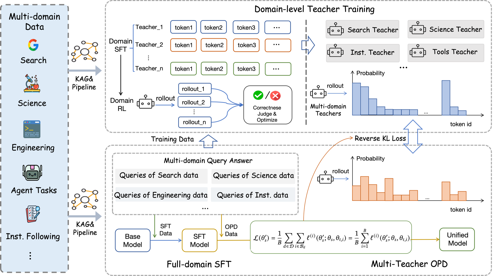
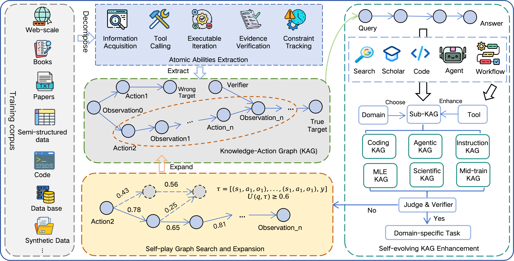
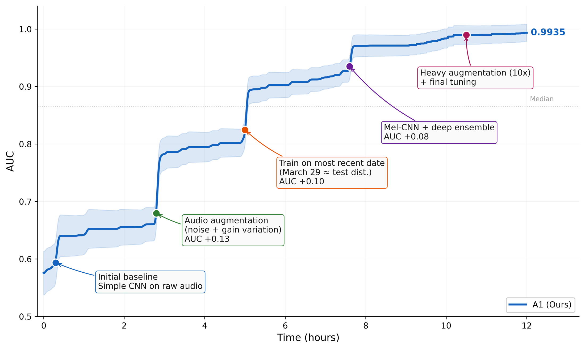
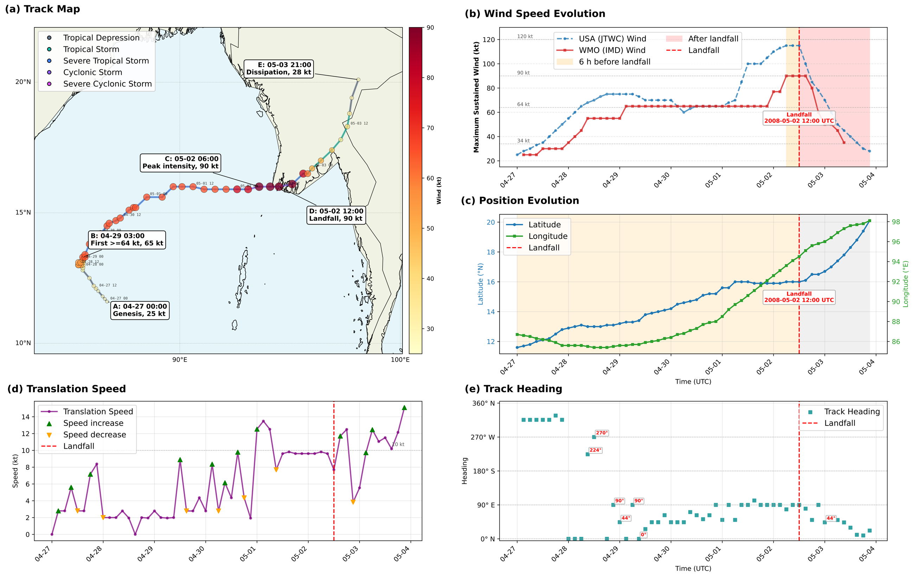

论文导读 · Agentic Model
一个 35B 的 MoE 智能体，靠「拉长智能体的决策视野」而非「堆参数」，在一系列长程 Agent 任务上追平甚至超过 Kimi-K2.6、DeepSeek-V4、GPT-5.5 这类万亿级模型。
前沿模型通常靠堆参数把海量推理、工具使用、领域知识「内化」进权重里——有效，但难以复现。本文换一条路：拉长智能体的「视野（horizon）」，把「获取知识 → 执行动作 → 观察结果 → 验证反馈」这条长决策链变成可训练的监督信号。为此他们做了三件事：① 建一套知识-行动基础设施（KAG），把杂乱语料变成带证据、动作、观察、验证结果的可复现长程轨迹（平均 45K token）；② 用三阶段训练（全域 SFT → 各领域专家教师 → 多教师蒸馏）；③ 提出领域路由的在线策略蒸馏（OPD）+ 显著词表对齐（SVA），把六个「打架」的领域能力揉进一个可部署的学生模型。
下面按「为什么这么做 → 怎么做 → 效果如何」的顺序展开。
要理解这篇论文，先得理解它在跟谁较劲——以及它选了一条什么样的赛道。
大模型正从「被动的语言模型」走向「自主的智能体」：能规划、用工具、与环境交互、并从反馈中改进。在软件工程、科研、复杂决策这些真实场景里，智能体必须在长程（long-horizon）下工作——获取信息、拆解任务、调用工具、验证中间结果、根据新信息不断调整策略。这类任务尤其难，因为早期的一个小错会不断累积，策略也要随新证据反复修正。
提升长程智能体，目前有两条扩展路线：
长程轨迹训练需要一个统一环境，把外部知识、动作、观察、验证信号连起来，让模型从「有依据的反馈」而非「孤立文本」中学习。可公开网络语料几乎从不暴露来源、动作轨迹、工具记录、执行日志、验证结果——没有这套基础设施，智能体学不会在真实场景里规划、恰当调用工具、验证证据、吸收反馈、从失败中恢复。
拉长视野还要整合一大批跨领域、可组合的能力：多步检索、工具使用、可执行迭代、约束跟踪、结果反思。这些能力在不同领域发育不均、彼此以复杂方式交互，很难把差异极大的专长「揉」进一个统一的智能体模型里。
本文三大贡献
Agents-A1（35B MoE）正是冲着这两个瓶颈去的：① 一个 35B 模型，在科研与研究类长程交互能力上追平甚至超过 1T 模型；② 一套长程知识-行动基础设施（KAG），支撑与外部知识/工具的多轮交互；③ 一个领域路由的在线策略蒸馏 + 显著词表对齐（SVA）方法，减少拉长视野时不同领域推理模式之间的冲突。
先看全景图，把三个阶段的关系装进脑子，后面再逐块拆开。
整套方法是一条三阶段流水线：先做全域 SFT 得到一个「样样都会一点」的长程智能体；再针对每个领域训练专家教师（用定向 SFT 或 RL）；最后通过多教师在线策略蒸馏，把各教师的专长整合进一个可部署的学生模型。而支撑这一切的是两根支柱：多领域数据基础设施（KAG） 提供「超越最终答案」的过程级监督；多教师 OPD 通过路由的教师指导、显著词表对齐、领域感知聚合，把领域教师融合成统一学生。

Agents-A1-SFT。一句话总结：数据（KAG）喂出通用底座，教师把各领域打磨到极致，蒸馏再把它们「和平地」合并成一个 35B 学生。
要拉长视野，先得有「带过程记录」的训练数据。这就是 KAG 要解决的事。
随着模型变大，训练越来越受限于高密度、可验证、可演化监督的供给。公开语料几乎不暴露来源、动作轨迹、工具记录、执行日志和验证结果。于是作者构建了一套知识-行动基础设施，把杂乱语料转成「可组合、可验证、可自我扩展」的监督。
他们先把「长程智能体能力」分解为 5 种原子能力（atomic abilities），KAG 就是为了给这 5 种能力恢复监督信号：
对某个领域 d，知识-行动图定义为一个带类型的四元组 𝒢_d = (𝒞_d, 𝒜_d, 𝒪_d, 𝒱_d)：
图由一条条动作记录 (s_t, a_t, o_t, v_t) 填充：当前状态 → 采取的动作 → 观察到的结果 → 验证结论；记录之间的边编码「支持 / 依赖 / 产出 / 验证 / 动作转移」关系。
Unlike a conventional knowledge graph that mainly stores entity-relation facts, a KAG preserves the process by which an answer is acquired, tested, revised, and verified. 与主要存「实体-关系事实」的传统知识图谱不同，KAG 保存的是一个答案「如何被获取、检验、修正、验证」的过程——它同时保留成功与失败的、有证据支撑的轨迹，从而支持跨步骤的信用分配和可复现的长程监督。

一句话总结：KAG 把「语料」变成「带过程记录的可验证任务工厂」，靠自博弈不断产出高质量长程轨迹。
单次生成的数据质量往往不够，需要多轮迭代和验证。每个生成的任务 x = (q, d, τ, y*, ℰ_q, 𝒱_q) 只有同时满足 5 个条件才会被验证者 π_V 接受：
这 5 条正是为了保证轨迹「值得学」——逼模型走完真实的长程决策，而不是投机取巧。
KAG 是抽象框架，落到具体领域各不相同。以下每个领域都是 KAG 的一次「实例化」。点开看每个领域怎么造数据。
KAG 实例化：𝒞=wiki 页面与段落级证据；𝒜=由超链接诱导的实体跳转与受控图游走；𝒪=检索到的页面文本与连接证据；𝒱=检查答案实体与其支持路径能否从上下文恢复。针对「信息获取 + 证据验证」两种原子能力。
先把 wiki 转成有向语料图（每个词条=实体节点，词条间引用=边），过滤掉重复标题、消歧页、无正文页、出链不足的页面；再用一个 LLM 选择器做受控随机游走，在「局部路径连贯」与「可选跨领域话题切换」之间权衡。走到死胡同就用短辅助游走找回合格节点。每次转移都存成一条动作记录。
把整条链序列化后，把最后一个实体当作答案，改写成自然语言问题，屏蔽专有名词等可识别信息，逼求解者顺着间接的长上下文证据去恢复答案，而不是靠直接的名字匹配。验证器再核对答案身份与证据支持。
用强模型带 search / read_page / code 三个工具在真实互联网上跑深研任务，最大上下文 256K，单轮工具调用数不设限。事后剔除答案错误、交互过短、明显猜答的轨迹；到达最大轮数的轨迹回滚一轮并强制模型给出答案。
KAG 实例化：𝒞=竞赛说明、数据集、执行环境；𝒜=解的编辑、实验运行、树导航、节点作废、答案提交；𝒪=日志、指标、产物、生成的提交；𝒱=评分器分数、提交格式检查、指标可靠性检查。因为「候选解=可执行代码，好坏只有评分后才知道」，每条轨迹就成了对解图的验证器引导式扩展。
任务来自 MLE-Dojo 与经自动化框架处理的已结束 Kaggle 竞赛（重新切分数据、构造私有答案、合成本地评估器）。轨迹在一个「生长可执行解节点树」的 harness 里产生：写完整脚本=开新根，打补丁=生子节点，执行节点=挂上日志/异常/指标/产物等观察。分支编码不同尝试，失败节点提供「负证据」。
| 工具 | 作用 |
|---|---|
| write_full_code | 从零写完整训练脚本，开一个新根节点（一条新思路） |
| patch_code | 对某节点代码做局部编辑，生成子节点，保留树历史 |
| execute_code | 运行节点，抓 stdout/异常，提取验证指标，检查提交有效性 |
| execute_bash | 受控 shell 命令（装依赖、查 GPU、文件操作） |
| list_nodes / select_node | 纵览解树 / 完整检视单个节点（代码、计划、输出、指标、父链） |
| invalidate_node | 排除指标不可信（泄漏、过拟合）的节点 |
| update_answer / get_current_answer | 提交/查看当前作为答案的节点 |
| write_notes / read_notes | 跨上下文压缩的持久记事本（决策、失败策略及原因、假设） |
| analyze | 派出独立子智能体在自己的上下文里探索数据/结果并返回一份结构化报告 |
这套紧凑工具接口，正是把「代码编写、执行、搜索树管理、持久记忆、委派分析」变成可训练动作的关键。
KAG 实例化：𝒞=问题陈述、主题、关键词、解结构；𝒜=分解、变换、检索、计算等推理动作；𝒪=中间推理状态、外部证据、执行输出；𝒱=对正确性、一致性、科学有效性的验证。
先收集数学、物理等基础领域的大规模问题池，建成 KAG；再用自博弈图搜索沿两个方向系统改写：(i) 更难的推理变体——增加知识深度、引入复杂符号结构、延长多步推导；(ii) 交互更强的变体——注入跨领域知识、加入需外部检索的概念、增加基于代码的数值计算需求。最终得到约 15K 个「更难、更需交互」的增强科学问题。
无工具推理：从强模型蒸馏纯推理轨迹（多步推导、符号变换、最终答案），只保留验证正确的，强化「内在推理」。有工具推理：搭一个交互框架配 search / visit / code / scholar 四个工具，蒸馏带工具调用、观察、计算的轨迹并按答案正确性过滤。两者互补，共同强化长程科学问题求解。
KAG 实例化：𝒞=用户指令、可验证约束、长文档块、注入的上下文规则、干扰项、候选答案；𝒜=约束解析、证据选择、局部规则应用、干扰项拒绝、答案格式化；𝒪=选中的证据、解析出的约束状态、注入规则状态；𝒱=约束满足、答案匹配、证据依赖、与注入信息一致性的自动校验器。针对「约束跟踪 + 证据验证 + 长上下文适应」。
KAG 实例化：𝒞=工具 schema、环境状态、可选模拟用户画像、任务资源；𝒜=基于 schema 的调用与澄清动作；𝒪=工具返回、状态更新、错误、用户反馈；𝒱=schema/状态/落地/目标完成检查。
从科学、网页、代码库、数据库、本地模拟等场景抽取候选工具接口，构建一张连接「工具-资源/状态类型-观察字段-验证目标」的图，边表示可执行依赖（schema 兼容、前置-效果、共享资源、状态转移等）。任务合成被形式化为在这张依赖图上的受约束图搜索：选取连通的工具子图或依赖路径，再渲染成用户指令。这样避免了工具的随意拼接——后面的调用必须依赖前面产生的对象/约束/观察。
在一个维护环境状态演化的 Tool Sandbox 里，求解后端多轮探索：选工具、绑参数、解读观察、决定继续/澄清/给出最终回答。需要澄清偏好或缺失约束时，一个模拟用户参与到循环里。同一目标生成多条候选轨迹，由验证器按调用格式、schema 类型、状态一致性、观察落地、约束满足、目标完成来打分排序；无效的被拒绝或路由去修复重采样。
有了数据，接下来是怎么训。阶段一打底，阶段二偏科，阶段三合并——最难也最新颖的是阶段三。
从 Qwen3.5-35B-A3B 出发，在全部领域数据上做监督微调（loss 只算在回复 token 上，指令 token 被 mask）。数据是约 100K 条长程轨迹，覆盖深研、编码与工程、科学求解、指令遵循、通用智能体五类。
SFT 之后的问题很快暴露：不同领域的推理模式会「打架」——这正是阶段三要解决的（见 第 06 节）。
为每个领域单独训练一个「偏科到极致」的教师。点开看每个教师的配方与增益：
两阶段：先在搜索轨迹上 SFT（学会拆子查询、在合适时机调用搜索/读页、综合信息）；再用 GRPO RL 提升多跳推理。约 2000 道精选多跳题，每题 8 rollout。
奖励设计：(1) 正确性奖励（LLM 裁判判答案对错）；(2) 搜索行为惩罚——效率惩罚（前 K 轮免罚，超出后线性递增，逼模型信息够了就停）+ 重复惩罚（滑窗内重复的查询/URL 小额扣分）；(3) 格式校准奖励。
增益：GAIA 59.8 → 95.1（+35），SEAL-0 41.4 → 54.1，HLE 47.4 → 50.3，XBench-DS 77.0 → 86.0。
前沿科学任务往往同时需要长推导、专业知识、数值计算与符号操作，所以科学教师要内在推理与外在交互兼备。
增益：FS-R 2.5 → 54.3（爆炸式提升），FS-O 64.5 → 82.0，HiPhO 37.0 → 46.9。
假设：更强的指令遵循能力可以促进长上下文下的上下文学习（ICL）。两阶段都用 GRPO，并用动态采样（只保留组内奖励非均匀的样本，滤掉太易/太难的组，让梯度集中在有对比信号的样本上）。
增益：IFBench 70.2 → 82.0，LongBench V2 59.0 → 62.4，IFEval 91.9 → 93.4。
工具使用光靠 SFT 不够，因为失败往往不是局部格式错，而是「何时调、调哪个、参数对不对、出错怎么恢复、任务何时算完」这些有延迟后果的决策——需要 RL 优化完整轨迹。
奖励与优势设计：两类奖励——结果奖励 r_out∈{0,1}（任务是否成功）+ 过程分 r_proc（按 LLM rubric 衡量部分完成度）。采用非对称优势：成功轨迹已满足所有 rubric，再加过程奖会重复计分；过程奖真正有用的是在失败轨迹上——把不同失败按「离成功有多近」排序。故 A_i = A_out + 0.5·𝟙[r_out=0]·A_proc。
小数据 + 数据复用：只构造了 64 个「近乎成功却拿不到结果奖」的硬样本，通过反复复用（等效于用大得多的批量）+ PAPO 式优势增强 GRPO，只用少量步数就实现高效的工具 RL 提升。
增益：τ²-Bench 32.53 → 82.50（Airline 16→72，Retail 30.7→82.5），VitaBench 26.0 → 44.16。
这是全文最新颖的一块：如何把上面四个「偏科」的教师，合并成一个不打架的通用学生。
先看要解决的痛点
全域 SFT 无法化解不同推理模式的冲突：长指令遵循是「单轮 + 长思考」模式，长程搜索是「多轮工具使用 + 短思考」模式，两者风格相反。SFT 把它们塞在一起，会在某些领域掉分（如 IFBench、HLE、通用智能体任务）。作者的答案是多领域在线策略蒸馏（OPD）。
已有的「采样-token OPD」只给真实 rollout 出来的那个 token 打分，效率高，但这种单 token 近似让附近的高概率备选项不受约束，容易产生不稳定或不均衡的指导。为此作者提出领域路由的多教师 OPD + 显著词表对齐（SVA）。
在每个位置 t，学生与被路由的教师在同一条学生生成的前缀上评估。SVA 不再用「采样 token 近似」，而是取教师分布下的 top-k 有效 token 作为局部支持集 𝒮，把学生与教师的分布都在这个支持集上重新归一化，然后计算截断的反向 KL（只在可训练的模型生成位置上平均）。
ρ：越高越接近「全词表对齐」。多领域下不同领域会诱导异构梯度（风格、推理模式、证据获取、工具使用各不同）。作者用硬路由：每条样本只由它所属领域的教师监督 θ_t,i = θ_t^{d_i}，而非多个教师的软混合——这保住了各教师的领域偏好，避免在 token 层面混入不兼容信号。
再做领域归一化聚合：先在每个活跃领域内对样本求平均，再对活跃领域求平均。这样高频或高 loss 的领域不会主导学生更新，每个活跃领域获得相当的影响力。
OPD does not always outperform the corresponding domain teacher. This is expected, since each teacher is specialized for one domain, while Agents-A1 is required to maintain a unified policy across heterogeneous tasks. 一个诚实的观察：蒸馏后的学生并不总能超过对应的领域教师。这很正常——教师只专精一门，而 Agents-A1 要维持一个跨异构任务的统一策略。OPD 的作用是把各教师的长处「搬进」一个模型、并改善全域 SFT 的平衡，而非在每门专长上都碾压教师。
结论一句话：在多步搜索、科研、长指令遵循等长程任务上，Agents-A1（35B）能与 1T 级模型掰手腕，部分项目还反超。
下表挑出最有代表性的基准。橙色高亮表示 Agents-A1 超过全部列出的 1T 模型。
| 基准 | Agents-A1 35B | Qwen3.6 35B | Kimi-K2.6 >1T | DSV4-Pro >1T | GPT-5.5 >1T |
|---|---|---|---|---|---|
| SEAL-0 | 56.4 | 38.7 | 50.5 | 55.0 | 42.3 |
| GAIA | 96.0 | 78.6 | 80.6 | 98.1 | 87.4 |
| BrowseComp | 75.5 | 67.9 | 83.2 | 83.4 | 84.4 |
| HiPhO 物理奥赛 | 46.4 | 37.7 | 41.1 | 38.7 | 43.3 |
| FS-Olympiad | 79.0 | 60.3 | 73.0 | 76.0 | 78.0 |
| FS-Research | 40.0 | 2.9 | 17.9 | 13.3 | 26.7 |
| IFBench | 80.6 | 64.4 | 71.8 | 73.5 | 75.9 |
| HLE w/ tools | 47.6 | 36.2 | 54.0 | 48.2 | 52.2 |
| SciCode | 44.3 | 35.8 | 53.5 | 50.0 | 56.1 |
| MLE-Bench-Lite | 43.9 | 34.9 | 62.1 | 63.6 | 72.7 |
| MolBench-Bind | 56.8 | 48.7 | 21.6 | 37.8 | 62.2 |
最亮眼的是 FS-Research：40.0，把 1T 模型（26.7 / 17.9 / 13.3）远远甩开；SEAL-0、HiPhO、FS-O、IFBench 也全面反超 1T。短板在 MLE-Bench-Lite（43.9 vs GPT-5.5 的 72.7）——见下方「诚实的短板」。
对比全域 SFT 与 OPD（表 4）：SFT 因领域冲突在几个基准上掉分，OPD 阶段基本修复，并进一步提升。
| 基准 | Qwen 基座 | Agents-A1-SFT | Agents-A1 (OPD) |
|---|---|---|---|
| IFBench | 70.2 | 68.7 ↓ | 80.6 |
| HLE w/ tools | 47.4 | 41.6 ↓ | 47.6 |
| τ²-Bench（复现基线 33.0） | ~33 | 76.7 | 79.8 |
| FS-Research | 2.5 | 31.7 | 40.0 |
| MLE-Bench-Lite | 24.2 | 39.4 | 43.9 |
红色 ↓ 表示 SFT 阶段相对基座掉分（推理模式冲突所致），OPD 阶段把这些分数拉回甚至超过基座——正是领域路由蒸馏想要的效果。
诚实的短板
Agents-A1 在 MLE-Bench-Lite 上（43.9）明显弱于 1T 模型（GPT-5.5 达 72.7）。作者认为原因在于：MLE 不是静态解题，而是要走完一整套工程流程，对「保持稳定目标、记住过往决策、在大量实验中避免重复试错」提出了更高要求——这恰恰是当前 35B 智能体的能力边界。
数字之外，两个案例更能说明「长程视野」到底意味着什么。
在 MLE 数据集的「右鲸叫声检测」任务上，Agents-A1 从一个朴素 CNN 基线出发，在 12 小时里自主完成一连串干预——时序数据分析、音频增强、时序局部化训练、Mel 频谱 CNN 集成的架构精修、大规模增强，把最佳验证 AUC 从 0.58 一路推到 0.9935，最终达到金牌水平。

一句话总结：模型把「数据诊断 + 表示设计 + 增强策略 + 迭代评估」串成一条可解释的多步优化链，最终逼近满分 AUC。
让模型从真实最佳路径数据出发，重建 2008 年北印度洋强气旋风暴 Nargis 的路径、生成诊断可视化、并解读其路径与强度演化。Agents-A1 自动识别 IBTrACS 为数据源，完成数据抽取、清洗、派生指标计算、可视化、结果综合，形成「规划 → 编码 → 执行 → 结果检查 → 科学分析 → 报告生成」的多阶段闭环。它以合理保真度重建了 Nargis 在孟加拉湾中部生成、西北向移动、随后向东北再曲折、最终在缅甸南部登陆的主要演化；并保留 WMO/IMD 与 JTWC/USA 两套强度估计以避免混淆不同业务惯例。

一句话总结：这张多面板图是模型自主完成「数据组织 + 诊断计算 + 结果整合」的产物，体现其端到端的地球科学分析闭环能力。
作者把 Agents-A1 定位为「拉长智能体视野」的一次早期尝试。模型的智能体能力主要来自三个源头：Qwen3.5-35B-A3B 的初始基线、为不同长程场景搭建的统一知识-行动基础设施、以及能减少跨领域推理模式冲突的领域路由 OPD。
在实践中他们发现，有几种基础原子能力对「让智能体在长程求解中保持目标一致与高效」尤其关键——推理前先规划、行动前先反思、在长上下文中总结关键信息、识别重要的过往信息。未来工作将聚焦提升这些能力，并以此为起点进一步增强 Agents-A1 解决长流程任务的水平。
We hope this work provides the community with a practical path for scaling the horizon using a 35B agent that can reach or match the performance of 1T models on long-horizon tasks. 作者的期望：为社区提供一条务实的路径——用一个 35B 智能体，通过「拉长视野」在长程任务上追平甚至匹配 1T 模型。